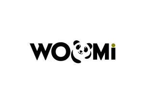

Trade Mark Journal No.2025/040 3 October 2025
UK00004267206 20 September 2025 (30,43)

- Class 30
- Poppadoms; Prepared pizza meals; Pizza; Meal; Poppadums; Kebab sauce; Chocolate-based ready-to-eat food bars; Popadoms; Rice-based snack food; Snack food (Rice-based -); Pizza sauces; Cereal-based snack food; Snack food (Cereal-based -); Pizza spices; Flavourings of tea for food or beverages; Chocolate-based meal replacement bars; Pizzas; Prepared meals in the form of pizzas; Pizza sauce; Fresh pizza; Sushi; Freeze-dried dishes with main ingredient being pasta; Freeze-dried dishes with the main ingredient being pasta; Snack food products made from rice; Samosas; Cereal based food bars; Freeze-dried dishes with main ingredient being rice; Freeze-dried dishes with the main ingredient being rice; Pizza pies; Ready-to-eat cereal-derived food bars; Turmeric for food; Gluten-free pizza; Noodle-based prepared meals; Chinese noodles; Chinese stuffed dumplings; Chinese noodles [uncooked]; Instant chinese noodles; Asian noodles; Chinese stuffed dumplings (gyoza, cooked); Chinese rice noodles (bifun, uncooked); Chinese steamed dumplings (shumai, cooked); Oolong tea [Chinese tea]; Udon (Japanese style noodles); Chinese matrimony vine tea (Gugijacha); Korean traditional rice cake [injeolmi]; Chinese batter flour; Japanese green tea; Ramen [Japanese noodle-based dish]; Japanese noodle-based dish (Ramen); Korean soy sauce [ganjang]; Korean traditional sweets and cookies [hankwa]; Chocolate with Japanese horseradish; Okonomiyaki [Japanese savoury pancakes]; Pad thai (Thai stir-fried noodles); Korean traditional pressed sweets (Dasik); Japanese arrowroot powder (kudzu-ko, for food); Yuja-cha (Korean honey citron tea); Asian apricot tea (maesilcha); Okonomiyaki [Japanese savory pancakes]; Japanese style steamed cakes (mushi-gashi); Soba noodles [japanese noodles of buckwheat, uncooked]; Japanese sponge cakes (kasutera); Black tea [English tea]; Baozi; Papadums; Curry powder [spice].
- Class 43
- Takeaway services; Takeaway food services; Take-away restaurant services; Take-away food services; Takeaway food and drink services; Take-away food and drink services; Take-away fast food services; Take-out restaurant services; Carry-out restaurants; Fast-food restaurant services; Serving food and drink in doughnut shops; Catering in fast-food cafeterias; Providing food and drink in doughnut shops; Eateries; Catering of food and drinks; Catering for the provision of food and drink; Food and drink catering; Catering of food and drink; Catering (Food and drink -); Serving food and drink in Internet cafes; Salad bars [restaurant services]; Fast food restaurants; Catering for the provision of food and beverages; Providing food and drink in Internet cafes; Preparation and provision of food and drink for immediate consumption; Catering services for the provision of food and drink; Provision of food and drink; Mobile restaurant services; Food and drink catering for cocktail parties; Serving food and drinks; Provision of food and beverages; Corporate hospitality (provision of food and drink); Food and drink catering for banquets; Preparation of Japanese food for immediate consumption; Preparation of food and drink; Providing of food and drink via a mobile truck; Catering services for the provision of food; Pizza parlors; Take away food and drink services; Services for the provision of food and drink; Preparation of food and beverages; Office catering services for the provision of coffee; Serving food and drink for guests; Services for the preparation of food and drink; Food and drink preparation services; Mobile catering; Coffee shops.
Prabu Serumadar